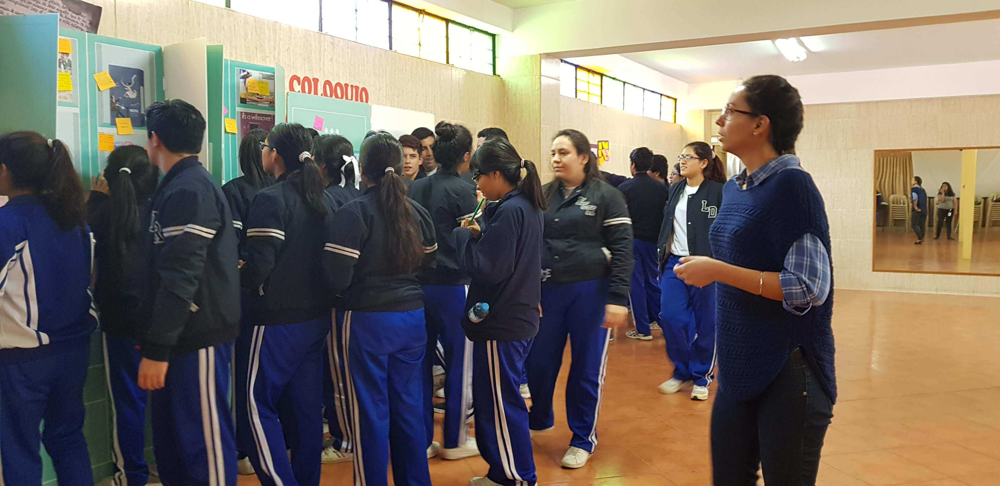
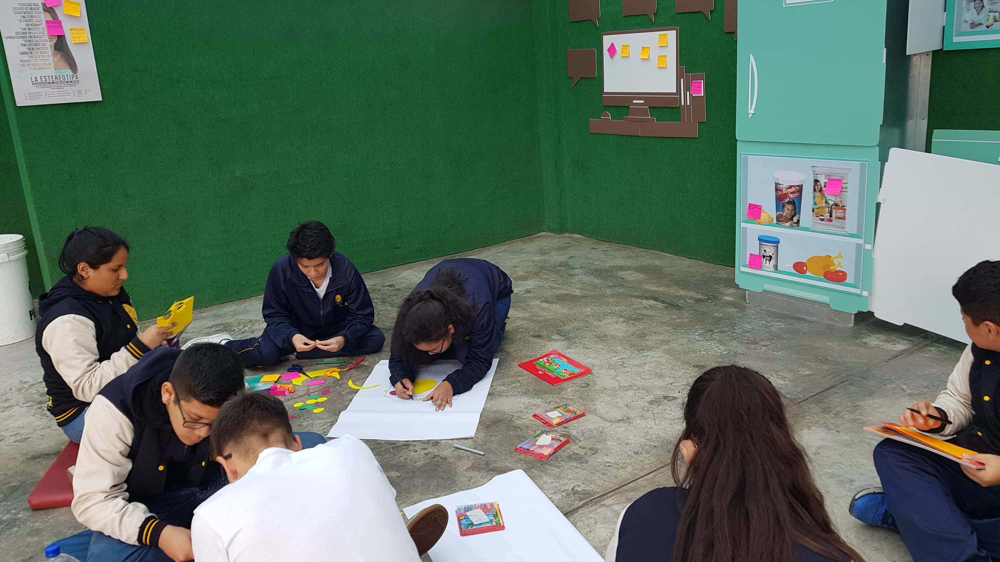

ELLA HA SIDO PRESENTADA COMO UN SER QUE NO ES Y CON
ASPIRACIONES QUE NO
TIENE, LA HAN ENCERRADO EN UN CUADRO QUE PARECE NO TENER SALIDA.
TÚ PUEDES CAMBIAR ESO.
El problema se encuentra en la formación y asimilación de estereotipos de género y de la simplificación de individuos complejos en tipos inflexibles con la intención de lograr generalizaciones colectivas para el beneficio comercial. Pero no es tarde para empezar a reflexionar sobre ello.

1. Explora
Los participantes exploran los espacios simulados, los detalles de productos en una cocina, en la refrigeradora, en la alacena, y en otros muebles. También recorren una simulación de un paradero en la calle observando imágenes publicitarias, finalmente ingresan a una simulación de una oficina con organigramas, y otros datos cotidianos.

2. Reflexiona
Luego de la observación, los participantes colocan anotaciones en los espacios y objetos que les llamaron la atención y explican el motivo. Una ronda de preguntas es moderada por un facilitador para profundizar en ciertos hallazgos. Bajo un proceso de deconstrucción se visibilizan elementos aparentemente rígidos para ser flexibilizados.
3. Desarrolla
Los participantes organizados en equipos construyen una propuesta alternativa a las típicas del mercado, puede ser una campaña de comunicación, un empaque interactivo, un nuevo producto, el relanzamiento de un servicio, un negocio digital, etc.
4. Comparte
Finalmente cada equipo presenta y comparte su solución al resto de los participantes, donde reciben retroalimentación, y se genera una conversación para detectar oportunidades adicionales. Se cierra con las conclusiones de los aprendizajes y resultados.

• Puede ser una sesión de 4 horas o full day de 8 horas.
• Se requiere de ½ hora para instalar el espacio si es fuera de UCAL.
• Los espacios simulados se adaptan a la mayoría de ambientes fuera de UCAL.
• Incluye materiales de exploración e ideación.
• Se registra de forma audiovisual para posterior análisis y difusión de ser requerido.
• Es facilitado por 1 especialista y 1 asistente de producción.

Sin embargo, a solicitud de diversos psicopedagogos y profesores se ha podido llevar a cabo en más de 20 colegios en Lima, en distritos como Ate, Santiago de Surco, Magdalena, Chorrillos, Surquillo, La Molina, Miraflores, etc. participando más de 400 estudiantes y 60 profesores de dichas escuelas solo entre Setiembre y Noviembre del 2018, con resultados realmente interesantes.
Actualmente, estamos recibiendo solicitudes para realizarlo en empresas y otras instituciones públicas y privadas.
• Contacto: Deborah Plasencia
• Email: dplasencia@ucal.edu.pe
• Telf: (01) 622-2222 Anexo: 5522
• Campus: Av. La Molina 3755. Lima, Perú.
ELLA HA SIDO PRESENTADA COMO UN SER QUE NO ES Y CON ASPIRACIONES QUE NO TIENE, LA HAN ENCERRADO EN UN CUADRO QUE PARECE NO TENER SALIDA.
TÚ PUEDES CAMBIAR ESO.
¿Qué ha estado sucediendo?
Las nociones de masculinidad y femineidad a lo largo del tiempo han reproducido estructuras rígidas que delimitan espacios y roles. El problema se encuentra en la formación y asimilación de estereotipos de género y de la simplificación de individuos complejos en tipos inflexibles con la intención de lograr generalizaciones. Peor aún, se plantean dichas restricciones como ‘normales’ sobre cómo debería ser un hombre o una mujer, sin mayor reflexión.
Los medios de comunicación, la publicidad y las estrategias de marketing impulsadas por las marcas tienen parte de responsabilidad, ya que operan dentro del espacio social como actores con poder propio que trasciende el plano económico, modelando imaginarios culturales. Algo tan aparentemente inocuo como el empaque de un producto, o un panel en la calle posee poder simbólico para reforzar e inscribir ideas, valores y prejuicios o facilitar la articulación de ‘sentidos comunes’.
Sin embargo, ya no es tan sencillo usar elementos con ciertos contenidos sexistas. Últimamente hemos visto cómo varias marcas han tenido que retirar sus campañas en las que usaron figuras semidesnudas de una mujer con frases en doble sentido, o fueron criticadas por contar historias donde ella es la que lava o cocina para él. Se ha condensado la idea que la fórmula usada durante décadas – mujeres en bikini tratadas como objetos para llamar la atención – está en declive.
¿Qué es La Estereotipa?
Es un experimento que estimula la creación de estrategias de marketing alternativas mediante la deconstrucción de roles y estereotipos de género en la publicidad, que aporten a mejorar la equidad en nuestra sociedad.

¿Cómo funciona?
El participante ingresa a un workshop con simulaciones de diferentes ambientes (casa, calle y oficina). Empieza explorando ciertas imágenes y textos, e interactuando con ciertos objetos, para luego reflexionar de manera grupal sobre estos. A continuación, desarrolla de forma ágil estrategias de marketing alternativas y finalmente las comparte con todos.

Explora
sobre estos. A continuación, desarrolla de forma ágil estrategias de marketing alternativas y finalmente las comparte con todos.
Reflexiona
sobre estos. A continuación, desarrolla de forma ágil estrategias de marketing alternativas y finalmente las comparte con todos.
Desarrolla
sobre estos. A continuación, desarrolla de forma ágil estrategias de marketing alternativas y finalmente las comparte con todos.
Comparte
sobre estos. A continuación, desarrolla de forma ágil estrategias de marketing alternativas y finalmente las comparte con todos.
Detalles del workshop
• Puede ser una sesión de 4 horas o full day de 8 horas.
• Se requiere de ½ hora para instalar el espacio si es fuera de UCAL.
• Los espacios simulados se adaptan a la mayoría de ambientes fuera de UCAL.
• Incluye materiales de exploración e ideación.
• Se registra de forma audiovisual para posterior análisis y difusión de ser requerido.
• Es facilitado por 1 especialista y 1 asistente de producción.
¿Cómo se creó La Estereotipa?
Más experimentos
Conoce más dando click en cada uno de ellos